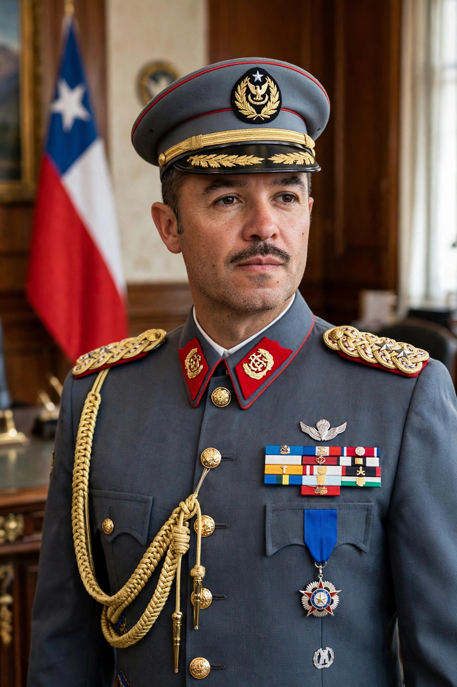

From Wikipedia, the free encyclopedia
| Augusto Pinochet | |
|---|---|
| Born | 25 November 1915, Valparaíso, Chile |
| Died | 10 December 2006 (aged 91), Santiago, Chile |
| Office | President of Chile, 1974–1990 (head of the military junta from 1973) |

Augusto José Ramón Pinochet Ugarte (25 November 1915 – 10 December 2006) was a Chilean military officer and dictator who ruled Chile from 1973 to 1990. On 11 September 1973, as commander-in-chief of the army, he led the military coup that overthrew the democratically elected socialist president Salvador Allende, who died during the assault on the presidential palace. A junta governed initially, with Pinochet emerging as its head and then as president.
The regime dissolved Congress, banned political parties, and carried out widespread repression: official commissions later documented more than 3,000 people killed or disappeared and tens of thousands imprisoned and tortured, many in sites such as the National Stadium in Santiago; the DINA secret police pursued opponents abroad, including the 1976 assassination of Orlando Letelier in Washington, D.C. Economically, advised by the "Chicago Boys," Pinochet imposed radical free-market reforms — privatisation, deregulation, and trade liberalisation — that produced a severe contraction in the mid-1970s, a debt crisis in 1982, and subsequently sustained growth alongside deep inequality. A 1980 constitution entrenched the regime's position while setting a timetable for a plebiscite.
In the 1988 plebiscite, voters rejected a further term for Pinochet; he handed over the presidency in March 1990 but remained army commander until 1998 and then a senator-for-life. In October 1998 he was arrested in London on a Spanish warrant issued by judge Baltasar Garzón, a landmark case in universal jurisdiction over crimes against humanity; the British government released him on health grounds in 2000. In Chile he was stripped of immunity and faced charges over killings and hidden offshore accounts, but died in 2006 without conviction.